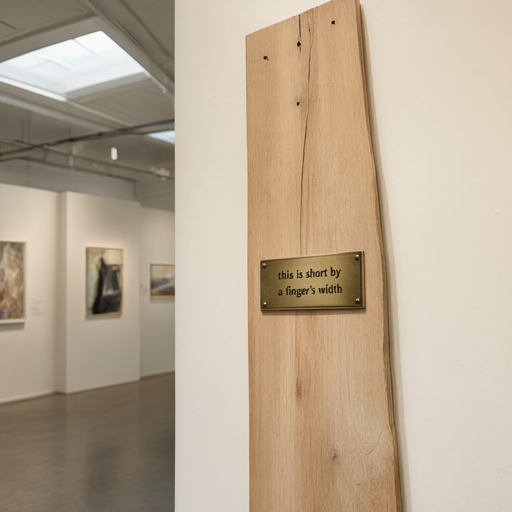

**Exhibit Name:** *The Leaning Tower of Oops* This exhibit showcases the original 19th-century design of the Leaning Tower of Pisa, which was intended to be perfectly vertical but began to tilt during construction due to an error in foundation placement on soft ground. The mistake, however, became a defining feature of the tower, ensuring its structural stability and making it one of the world’s most iconic landmarks. **Plaque Text:** *What was once a construction error became a symbol of resilience and beauty. The Leaning Tower of Pisa stands not because of precision, but because of the unexpected strength found in its imperfection.*
The archive keeps a shelf of labels that outlived their errors, each one a relic of past misjudgments, misinterpretations, or miscalculations that once seemed irrevocable but were ultimately superseded by time, truth, or the slow, relentless march of progress. These labels—some faded, others still legible—stand as silent witnesses to the impermanence of certainty, their presence a quiet acknowledgment that even the most authoritative designations can be revised, replaced, or rendered obsolete. They are not discarded, but preserved, not as mistakes, but as markers of the archive’s own evolution, its willingness to confront, document, and learn from its own history.
A speck of dust on life's grand stage, A bug, unnoticed, takes its place. Yet in the lens of time, it grows— A feature born from silent flaws.
**Exhibit Name:** *The Leaning Tower of Pisa (Misaligned Foundation)* This exhibit showcases how a minor error in the foundation's alignment during construction inadvertently created one of the world's most iconic and stable structures, proving that imperfection can lead to enduring architectural marvels. **Plaque Text:** In 1173, the first floor of the Leaning Tower of Pisa was built on unstable soil, causing it to tilt. Rather than correct the error, builders adapted their designs to accommodate the lean, resulting in a structure that has stood for over 800 years—proof that a mistake can become a masterstroke.
The archive keeps a shelf of labels that outlived their errors, each one a relic of a bygone classification, a once-convincing taxonomy now rendered obsolete by time, discovery, or the slow unraveling of assumptions. They stand as quiet witnesses to the impermanence of knowledge, their faded ink a reminder that even the most carefully constructed systems can crumble under the weight of new understanding. Yet, rather than being discarded, they are preserved, not as mistakes, but as markers of the evolving journey of human thought.
A tiny bug crawls on the wall, A speck of life, both small and gall. Yet in the paint, it finds its place— A flaw turned feature, time and grace.
